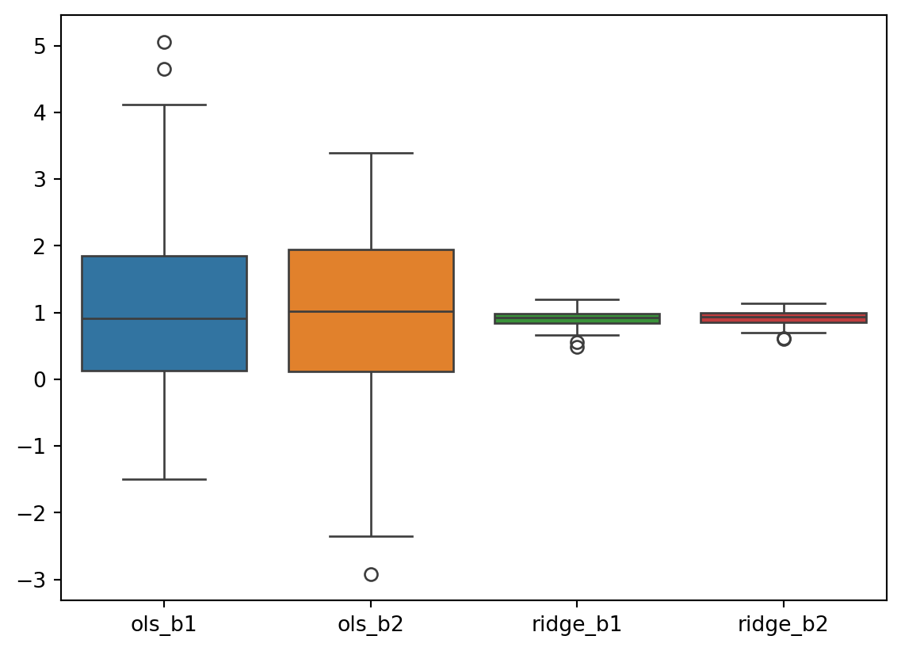
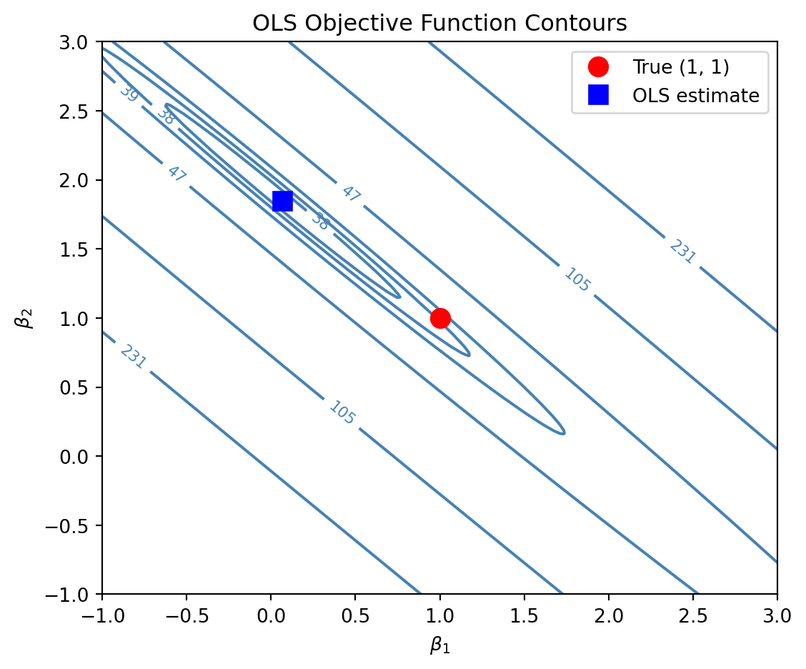
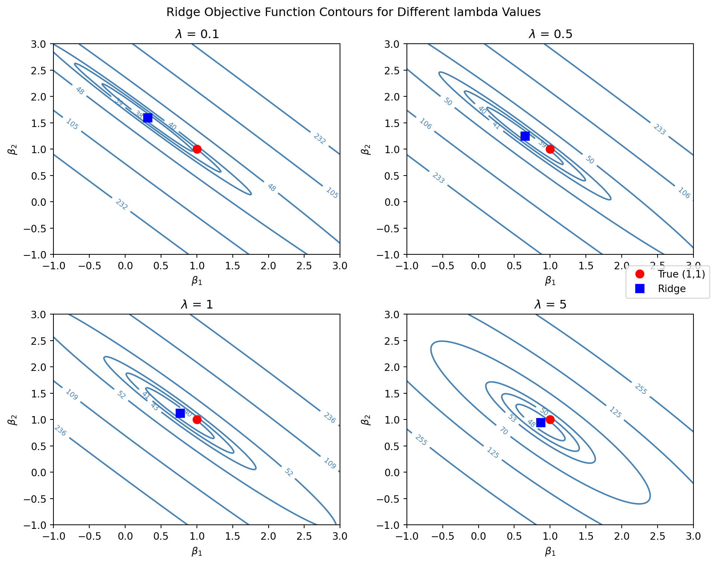
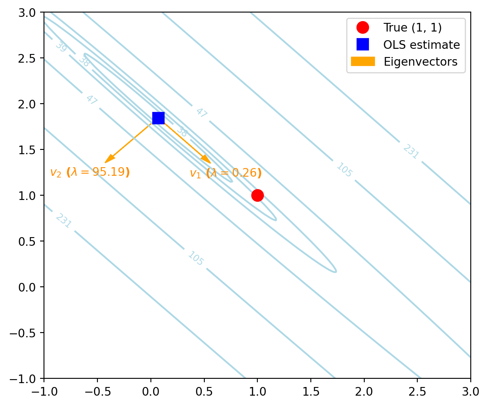
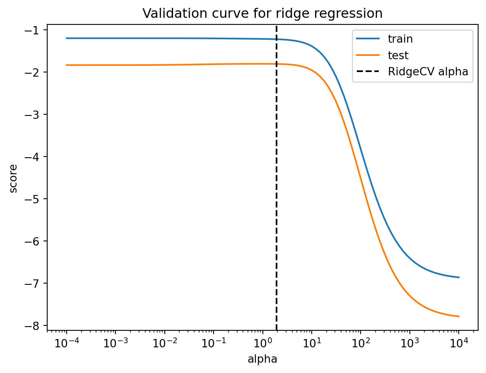
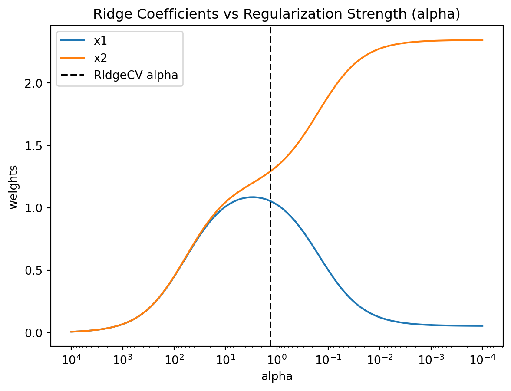
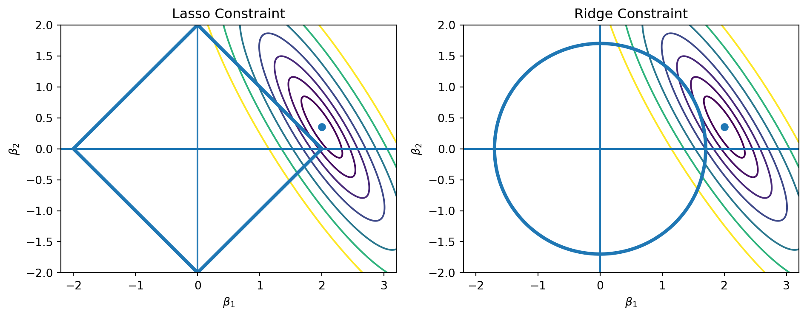
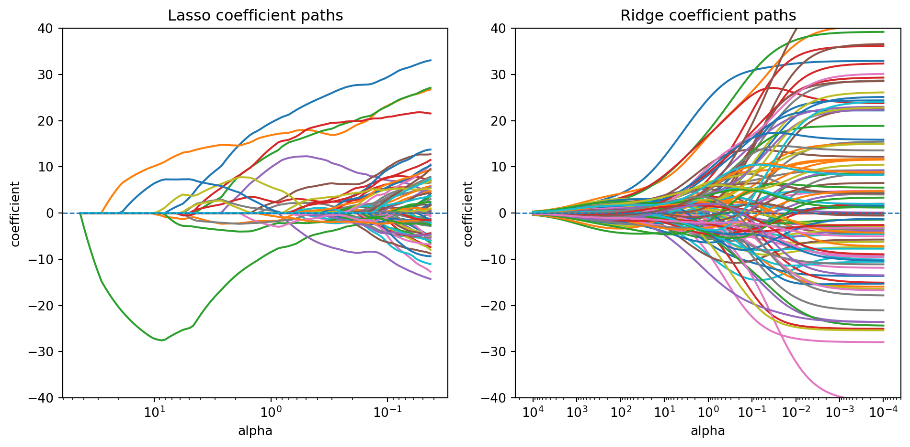
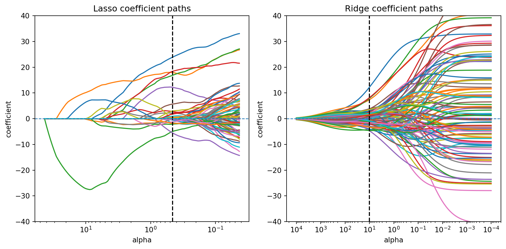

import numpy as np
rng = np.random.default_rng(2)
n = 30
Sigma = np.array([[1, 0.99], [0.99, 1]])
mean = np.array([0, 0])
X = rng.multivariate_normal(mean, Sigma, size=n)
y = rng.normal(loc=X[:, 0] + X[:, 1], scale=1)3 Regularization
\[ \require{physics} \require{braket} \]
\[ \newcommand{\dl}[1]{{\hspace{#1mu}\mathrm d}} \newcommand{\me}{{\mathrm e}} \newcommand{\argmin}{\operatorname{argmin}} \newcommand{\rss}{\mathrm{RSS}} \newcommand{\ols}{\mathrm{OLS}} \newcommand{\ridge}{\mathrm{ridge}} \newcommand{\lasso}{\mathrm{lasso}} \newcommand{\mle}{\mathrm{MLE}} \]
$$
$$
\[ \newcommand{\pdfbinom}{{\tt binom}} \newcommand{\pdfbeta}{{\tt beta}} \newcommand{\pdfpois}{{\tt poisson}} \newcommand{\pdfgamma}{{\tt gamma}} \newcommand{\pdfnormal}{{\tt norm}} \newcommand{\pdfexp}{{\tt expon}} \]
\[ \newcommand{\distbinom}{\operatorname{B}} \newcommand{\distbeta}{\operatorname{Beta}} \newcommand{\distgamma}{\operatorname{Gamma}} \newcommand{\distexp}{\operatorname{Exp}} \newcommand{\distpois}{\operatorname{Poisson}} \newcommand{\distnormal}{\operatorname{\mathcal N}} \]
3.1 Motivation
The OLS estimator is attractive because, under the Gauss–Markov assumptions, it is BLUE: the best linear unbiased estimator. However, when some predictors are nearly collinear, the matrix \(X^\top X\) becomes nearly singular. In that case, the variance of \(\hat\beta_{\ols}\) can be very large, so the estimated coefficients may become unstable and unreliable.
This leads to the bias-variance trade-off. By allowing a small amount of bias, we may substantially reduce the variance and improve predictive performance. A common way to do this is through regularization.
Two of the most important regularization methods are ridge regression and lasso. Both methods tend to shrink the coefficients toward zero, so they are also called shrinkage methods.
3.2 Ridge Regression
3.2.1 OLS esimator review
Consider a linear model \[ y=X\beta+\varepsilon. \]
Given the dataset \(X\) and \(y\), the OLS estimator \(\hat\beta_{\ols}\) finds the coefficient vector \(\beta\) that minimizes the residual sum of squares \[ \rss(\beta)=\norm{y-X\beta}_2^2. \] In other words, \[ \hat{\beta}_{\ols} = \arg\min_{\beta}\qty{\norm{y - X\beta}_2^2}. \] When \(X^\top X\) is invertible, the solution is \[ \hat{\beta}_{\ols} = (X^\top X)^{-1}X^\top y. \]
3.2.2 Ridge estimator
Ridge regression modifies the OLS loss function by adding a quadratic penalty.
Definition 3.1 (Ridge Regression) For a response vector \(y \in \mathbb{R}^n\) and a design matrix \(X \in \mathbb{R}^{n \times p}\), the Ridge estimator \(\hat{\beta}_{\ridge}\) is defined as: \[ \hat{\beta}_{\ridge} = \arg\min_{\beta} \qty{ \norm{y - X\beta}_2^2 + \lambda \norm{\beta}_2^2 } \] where
- \(\lambda \ge 0\) is the regularization parameter that controls the trade-off between the fit to the data and the penalty on the coefficient size.
- \(\norm{\beta}_2^2 = \sum_{j=1}^p \beta_j^2\) is the \(L_2\) norm of the coefficient vector
The penalty shrinks the coefficients toward zero. Larger values of \(\lambda\) produce stronger shrinkage. However, ridge regression does not perform variable selection, since it rarely sets any coefficient exactly to zero.
Similar to the OLS estimator, the Ridge estimator can be solved analytically.
Theorem 3.1 (The Closed-Form of Ridge estimator) The closed-form solution of \(\hat\beta_{\ridge}\) is \[ \hat{\beta}_{\ridge} = (X^\top X + \lambda I)^{-1} X^\top y. \]
Click for proof.
Consider the ridge regression objective
\[ Q(\beta) = (y-X\beta)^\top (y-X\beta) + \lambda \beta^\top \beta, \quad \text{ where }$\lambda \ge 0$. \]
We derive the ridge estimator by minimizing \(Q(\beta)\) with respect to \(\beta\).
First expand the quadratic form:
\[ \begin{aligned} Q(\beta) &= (y^\top - \beta^\top X^\top)(y-X\beta) + \lambda \beta^\top \beta \\ &= y^\top y - y^\top X\beta - \beta^\top X^\top y + \beta^\top X^\top X\beta + \lambda \beta^\top \beta . \end{aligned} \]
Since \(y^\top X\beta\) is a scalar, it equals its transpose:
\[ y^\top X\beta = \beta^\top X^\top y . \]
Thus
\[ Q(\beta) = y^\top y - 2\beta^\top X^\top y + \beta^\top X^\top X\beta + \lambda \beta^\top \beta . \]
Combine the last two quadratic terms:
\[ Q(\beta) = y^\top y - 2\beta^\top X^\top y + \beta^\top (X^\top X+\lambda I)\beta . \]
Now differentiate with respect to \(\beta\):
\[ \nabla_\beta Q(\beta) = -2X^\top y + 2(X^\top X+\lambda I)\beta . \]
Set the gradient equal to zero:
\[ -2X^\top y + 2(X^\top X+\lambda I)\beta = 0 . \]
So
\[ (X^\top X+\lambda I)\beta = X^\top y . \]
Assuming \(X^\top X+\lambda I\) is invertible, we obtain
\[ \hat{\beta}_{\ridge} = (X^\top X+\lambda I)^{-1}X^\top y . \]
Therefore the ridge estimator is
\[ \hat{\beta}_{\ridge} = (X^\top X+\lambda I)^{-1}X^\top y. \]
In this formulation, the term \(\lambda I\) (where \(I\) is the identity matrix) is added to the cross-product matrix \(X^\top X\) before inversion. This ensures that the matrix is non-singular and well-conditioned, even in the presence of multicollinearity or when \(p > n\).
3.2.3 About intercept
Linear regression models are commonly written in the form
\[ y = X\beta + \varepsilon. \]
This notation can represent two different model structures depending on whether an intercept is included.
- Model with intercept: \(\beta = [\beta_0,\beta_1,\ldots,\beta_p]^\top\) where \(\beta_0\) is the intercept. The design matrix \(X\) contains a leading column of ones representing the constant term.
- Model without intercept: \(\beta = [\beta_1,\ldots,\beta_p]^\top\) and the design matrix contains only the predictor variables. In this case the fitted regression surface is forced to pass through the origin.
In most practical applications, models with an intercept are preferred because they allow the regression function to shift vertically rather than being constrained to go through the origin.
NoteCentering and the No-Intercept Form
A model with an intercept can be rewritten as a no-intercept model by centering both the response and the predictors:
\[ y^c = y - \bar y, \qquad X_j^c = X_j - \bar X_j . \]
After centering, all variables have mean zero. In ordinary least squares, the intercept estimate is
\[ \hat\beta_0 = \bar y - \sum_{j=1}^{p}\hat\beta_j \bar X_j . \]
When the data are centered, this quantity becomes zero automatically. As a result, fitting a regression without an intercept on centered data produces the same fitted model as fitting a regression with an intercept on the original data.
For OLS, the intercept formulation and the centered no-intercept formulation are mathematically equivalent. However, the situation is slightly different in ridge regression. The ridge estimator introduces the penalty \[ \lambda \sum_{j=1}^{p} \beta_j^2 , \] which is intended to shrink the slope coefficients. In practice the intercept is not penalized, because penalizing it would shrink the overall level of the model toward zero and make the result depend on the arbitrary origin of the response variable.
For this reason ridge regression is usually formulated in the no-intercept form after centering the data, so that the penalty naturally applies only to the slope coefficients.
NoteStandardization in Practice
Because the ridge penalty depends on the sizes of the coefficients, ridge regression is usually implemented after standardizing the predictors. This puts the predictors on a common scale, so that the penalty treats them fairly.
In practice, the predictors are typically standardized, whereas the response is usually only centered rather than standardized.
For details see Section 2.5.4.
NoteImplementation in
scikit-learn
In scikit-learn, ridge and lasso regression automatically center the data internally when fitting the model (while leaving the final predictions on the original scale). The intercept is therefore handled separately and excluded from the penalty.
Because of this internal preprocessing, users typically do not need to manually center the response when using Ridge or Lasso. However, it is still common to standardize the predictors explicitly using tools such as StandardScaler, especially when building modeling pipelines.
3.2.4 Alternative Formulation
By the theory of Lagrange multipliers, ridge regression can also be written in a constrained optimization form:
\[ \hat{\beta}_{\ridge} = \arg\min_{\beta} \norm{y-X\beta}_2^2 \quad \text{subject to} \quad \norm{\beta}_2^2 \le s . \]
Here \(s \ge 0\) controls the size of the coefficient vector and is directly related to the penalty parameter \(\lambda\). The two parameters have an inverse relationship:
- Large \(s\) corresponds to small \(\lambda\). The constraint is weak, and \(\beta\) approaches the OLS estimator.
- Small \(s\) corresponds to large \(\lambda\). The constraint is strong, and \(\beta\) shrinks toward \(0\).
This formulation highlights that ridge regression limits the magnitude of the coefficient vector rather than directly penalizing prediction error. We will later use this interpretation to explain the difference between ridge regression and lasso.
NoteThe Constrained Optimization Problem
Ridge regression can be formulated as a constrained optimization problem, where we minimize RSS subject to a constriant \(s\) on the squared \(L_2\) norm of the coefficients: \[ \min_{\beta} \norm{y - X\beta}_2^2 \quad \text{subject to} \quad \norm{\beta}_2^2 \le s. \]
To solve this, we define the Lagrangian function \(\mathcal{L}(\beta, \lambda)\): \[ \mathcal{L}(\beta, \lambda) = \norm{y - X\beta}_2^2 + \lambda (\norm{\beta}_2^2 - s) \] where \(\lambda \ge 0\) is the Lagrange multiplier. Taking the partial derivative with respect to \(\beta\) and setting it to zero gives: \[ \frac{\partial \mathcal{L}}{\partial \beta} = -2X^\top(y - X\beta) + 2\lambda\beta = 0 \] Rearranging the terms yields the standard ridge estimator: \[ (X^\top X + \lambda I)\beta = X^\top y \implies \hat{\beta}_{\text{ridge}} = (X^\top X + \lambda I)^{-1} X^\top y. \] This shows that for every \(\lambda > 0\), there exists an equivalent constrained problem with some constraint \(s\).
NoteRelation Between \(\lambda\) and \(s\)
The connection between the penalty parameter \(\lambda\) and the constraint \(s\) can be explained as follows. The Lagrange multiplier method implies that at the optimal solution
\[ \lambda (\|\beta\|_2^2 - s) = 0 \] This leads to two scenarios:
- Non-binding constraint: If the OLS solution already satisfies \(\norm{\hat{\beta}_{\text{ols}}}_2^2 < s\), then \(\lambda = 0\). The constraint has no effect, and the estimator reduces to the OLS estimator \(\hat{\beta}_{\ols}\).
- Binding constraint: If \(\norm{\hat{\beta}_{\text{ols}}}_2^2 > s\), the constraint is active. In this case, \(\lambda > 0\) and the solution must lie exactly on the boundary \(\norm{\hat{\beta}_{\text{ridge}}}_2^2 = s\).
Therefore, the parameters \(\lambda\) and \(s\) are related through \[ \norm{(X^\top X + \lambda I)^{-1}X^\top y}_2^2 = s, \quad \text{when } \lambda > 0 . \]
\(\lambda\) is effectively the “price” paid to satisfy the constraint. As \(s\) decreases, \(\lambda\) must increase (heavier penalty) to pull the estimate further away from the OLS solution and toward the origin. Because the norm of the ridge estimator is a strictly decreasing function of \(\lambda\), for any \(s < \norm{\hat{\beta}_{\ols}}_2^2\), there exists a unique \(\lambda > 0\) such that \(\norm{\hat{\beta}_{\text{ridge}}}_2^2 = s\).
3.2.5 SVD and Tikhonov Regularization
Click to expand.
Recall the OLS estimator
\[ \hat{\beta}_{\ols} = (X^\top X)^{-1}X^\top y . \]
Let the singular value decomposition (SVD) of \(X\) be
\[ X = UDV^\top , \]
where
- \(U\) is an \(n \times n\) orthogonal matrix,
- \(V\) is a \(p \times p\) orthogonal matrix,
- \(D\) is an \(n \times p\) diagonal matrix whose nonzero entries \(d_1,\ldots,d_r\) are the singular values of \(X\).
Using the SVD,
\[ X^\top X = V D^\top D V^\top . \]
Since \(D^\top D = \mathrm{diag}(d_1^2,\ldots,d_r^2)\), the eigenvalues of \(X^\top X\) are \(d_i^2\).
Hence the OLS estimator can be written as
\[ \hat{\beta}_{\ols} = V(D^\top D)^{-1}D^\top U^\top y . \]
Since \(D^\top D=\mathrm{diag}(d_1^2,\ldots,d_r^2)\), we have
\[ (D^\top D)^{-1}=\mathrm{diag}\qty(\frac{1}{d_1^2},\ldots,\frac{1}{d_r^2}). \] Let \(u_i\) and \(v_i\) denote the columns of \(U\) and \(V\). Then the estimator can be written as
\[ \hat{\beta}_{\ols} = \sum_{i=1}^{r} \frac{1}{d_i}\, v_i\, u_i^\top y . \]
If some singular values \(d_i\) are very small, the factors \(1/d_i\) become very large, which leads to unstable coefficient estimates. Therefore this expression reveals the instability of OLS.
Now turn to Ridge regression. We replace the OLS estimator with
\[ \hat{\beta}_{\text{ridge}} = (X^\top X+\lambda I)^{-1}X^\top y . \]
Substituting the SVD gives
\[ \hat{\beta}_{\text{ridge}} = V(D^\top D+\lambda I)^{-1}D^\top U^\top y . \]
Because \(D^\top D\) is diagonal, the estimator can be written componentwise as
\[ \hat{\beta}_{\text{ridge}} = \sum_{i=1}^{r} \frac{d_i}{d_i^2+\lambda} v_i\,u_i^\top y . \]
This representation shows that ridge regression applies a shrinkage factor
\[ \frac{d_i^2}{d_i^2+\lambda} \]
to each principal component direction.
- When \(d_i\) is large, the factor is close to \(1\), so the component is almost unchanged.
- When \(d_i\) is small, the factor becomes small, shrinking the unstable directions.
Thus ridge regression stabilizes the estimator by shrinking the contributions of directions associated with small singular values.
TipTikhonov regularization
Tikhonov regularization is a method used to solve ill-posed problems and handle multicollinearity by adding a penalty term, \(\alpha\norm{L\beta}_2^2\). When the Tikhonov matrix \(L\) is the identity matrix \(I\), it simplifies to ridge regression. Therefore, ridge regression is a special case of Tikhonov regularization [1, 2].
3.3 Ridge Regression in Python
We use the following simulated dataset to demonstrate ridge regression.
The covariance matrix has a very high correlation, so the two predictors \(x_1\) and \(x_2\) are highly correlated.
The data set is generated from a model with \(\operatorname{E}(y\mid x_1,x_2)=x_1+x_2\). Therefore the true coefficients are \(\beta_1=\beta_2=1\).
3.3.1 Ridge estimator
We use Ridge from sklearn.linear_model to fit a ridge regression model. Its API is very similar to that of OLS. The argument alpha is the regularization parameter \(\lambda\).
For simplicity, we use a no-intercept model, so we set fit_intercept=False.
from sklearn.linear_model import Ridge
ridge = Ridge(alpha=5, fit_intercept=False).fit(X, y)
print(f"Ridge beta = {ridge.coef_}")Ridge beta = [0.85769874 0.84964704]For comparison, we also fit the OLS estimator.
from sklearn.linear_model import LinearRegression
ols = LinearRegression(fit_intercept=False).fit(X, y)
print(f"OLS beta = {ols.coef_}")OLS beta = [0.99640827 0.85969191]In this example, you may notice two things:
- The ridge coefficients are smaller in magnitude than the OLS coefficients.
- The OLS coefficients may happen to be closer to the true values in this single sample.
The second point is due to randomness in the simulated data. To see the general pattern, we repeat the simulation many times.
import pandas as pd
res = []
for _ in range(100):
X = rng.multivariate_normal(mean, Sigma, size=n)
y = rng.normal(loc=X[:, 0] + X[:, 1], scale=1)
ols = LinearRegression(fit_intercept=False).fit(X, y)
ridge = Ridge(alpha=5, fit_intercept=False).fit(X, y)
res.append(
{
"ols_b1": ols.coef_[0],
"ols_b2": ols.coef_[1],
"ridge_b1": ridge.coef_[0],
"ridge_b2": ridge.coef_[1],
}
)
res = pd.DataFrame(res)The first five results are shown below. We can see that the OLS estimates vary substantially from sample to sample.
res.head(5)| ols_b1 | ols_b2 | ridge_b1 | ridge_b2 | |
|---|---|---|---|---|
| 0 | 1.642753 | 0.343583 | 0.908249 | 0.883823 |
| 1 | 1.105216 | 0.774858 | 0.885627 | 0.858433 |
| 2 | -0.978268 | 3.091366 | 0.797745 | 1.092525 |
| 3 | 1.301118 | 0.325411 | 0.781313 | 0.728571 |
| 4 | -0.626684 | 2.741871 | 0.926826 | 1.008491 |
This becomes even clearer in the boxplot below, which shows that the ridge estimator has much smaller variance than the OLS estimator.
import seaborn as sns
sns.boxplot(res)
3.3.2 Contour map
The variance of both \(\hat{\beta}_1\) and \(\hat{\beta}_2\) is quite large under OLS. This is because the variance of \(\widehat{\boldsymbol{\beta}}\) is \(\sigma^2(\mathbf{X}^\top\mathbf{X})^{-1}\). Since the columns of \(\mathbf{X}\) are highly correlated, the smallest eigenvalue of \(\mathbf{X}^\top\mathbf{X}\) is close to zero, making the largest eigenvalue of \((\mathbf{X}^\top\mathbf{X})^{-1}\) very large.
To see things in more details, we first build the RSS function. For each \(\beta_1\) and \(\beta_2\) in the range, we form a model \(\hat y_{\beta}=\beta_1x_1+\beta_2x_2\) and use it to compute \(\rss = \sum (y-\hat y)^2\).
beta1_vals = np.linspace(-1, 3, 200)
beta2_vals = np.linspace(-1, 3, 200)
B1, B2 = np.meshgrid(beta1_vals, beta2_vals)
betas = np.column_stack([B1.ravel(), B2.ravel()])
preds = X @ betas.T
rss_term = np.sum((y[:, None] - preds) ** 2, axis=0)
rss_value0 = rss_term.reshape(B1.shape)We then construct the contour map for the \(\rss\) surface, plotting the isolines that correspond to the 1%, 2.5%, 5%, 20%, 50%, and 75% quantiles of the distribution. The ture coefficient \((\beta_1=1,\beta_2=1)\) is displayed as the red dot, as well as the estimated \(\beta\) as a blue square in the countour map.
Code
import matplotlib.pyplot as plt
quant_levels = np.quantile(rss_value0, [0.01, 0.025, 0.05, 0.2, 0.5, 0.75])
fig, ax = plt.subplots(figsize=(6, 5))
cs = ax.contour(B1, B2, rss_value0, levels=quant_levels, colors="steelblue")
ax.clabel(cs, inline=True, fontsize=8, fmt="%.0f")
ax.plot(1, 1, "ro", markersize=10, label="True (1, 1)")
ax.plot(ols.coef_[0], ols.coef_[1], "bs", markersize=10, label="OLS estimate")
ax.set_xlabel(r"$\beta_1$")
ax.set_ylabel(r"$\beta_2$")
ax.set_title("OLS Objective Function Contours")
ax.legend()
plt.tight_layout()
The contour map reveals a narrow, elongated valley in the \(\rss\) objective function. While the surface is highly sensitive to movement perpendicular to the valley, it remains relatively flat along the valley floor. Because the surface is particularly flat in this longitudinal direction, numerous parameter combinations yield nearly identical \(\rss\) values. Consequently, the data provides insufficient information to distinguish between points along this axis, making the \(\rss\) minimum highly unstable. This lack of identifiability is the fundamental cause of high variance in the estimated coefficients.
When ridge regression is applied, the \(\rss\) objective function is modified by adding a penalty term. As a result, the objective surface no longer exhibits a long, flat valley floor. Instead, the minimum becomes more well-defined, and the estimate is pulled toward the origin. Although the true parameter may no longer lie at the bottom of this modified valley, the ridge estimate has substantially lower variance. In this way, ridge regression stabilizes the estimation by controlling the region along the valley floor where the OLS solution would otherwise vary widely.
Here we show the \(\rss\) objective function contours for \(\lambda=0.1\), \(1\), \(10\) and \(100\).
Code
from sklearn.linear_model import Ridge
beta1_vals = np.linspace(-1, 3, 200)
beta2_vals = np.linspace(-1, 3, 200)
B1, B2 = np.meshgrid(beta1_vals, beta2_vals)
lambda_vals = [0.1, 1, 10, 100]
fig, axes = plt.subplots(2, 2, figsize=(10, 8))
for ax, reg_lambda in zip(axes.ravel(), lambda_vals):
betas = np.column_stack([B1.ravel(), B2.ravel()])
preds = X @ betas.T
rss_term = np.sum((y[:, None] - preds) ** 2, axis=0)
penalty_term = reg_lambda * np.sum(betas**2, axis=1)
rss_value = (rss_term + penalty_term).reshape(B1.shape)
quant_levels = np.quantile(rss_value, [0.01, 0.025, 0.05, 0.2, 0.5, 0.75])
cs = ax.contour(B1, B2, rss_value, levels=quant_levels, colors="steelblue")
ax.clabel(cs, inline=True, fontsize=7, fmt="%.0f")
ridge = Ridge(alpha=reg_lambda, fit_intercept=False).fit(X, y)
ax.plot(1, 1, "ro", markersize=8, label="True (1,1)")
ax.plot(ridge.coef_[0], ridge.coef_[1], "bs", markersize=8, label="Ridge")
ax.set_title(r"$\lambda$ = {}".format(reg_lambda))
ax.set_xlabel(r"$\beta_1$")
ax.set_ylabel(r"$\beta_2$")
handles, labels = axes[0, 0].get_legend_handles_labels()
fig.suptitle("Ridge Objective Function Contours for Different lambda Values")
fig.legend(handles, labels, loc="right")
plt.tight_layout()
As \(\lambda\) increases, the bottom of the valley gradually becomes more rounded, and the objective surface rises more steeply as the coefficients move away from the origin. This additional curvature removes the long flat valley floor and makes the minimum more clearly defined. At the same time, the penalty pulls the estimated coefficients toward the origin, so the ridge estimate is effectively dragged toward zero.
Geometrically, this shrinkage prevents the estimator from drifting freely along the nearly flat valley direction that appears in the OLS objective. As a result, the ridge estimator is much more stable and typically has substantially lower variance than the OLS estimator, although this improvement comes at the cost of introducing some bias.
NoteGram matrix and Covariance matrix
The Gram matrix \(X\top X\) represents the raw inner products of predictors. In the context of \(\rss\) map, it is the direct source of the surface geometry.
The Covariance matrix is essentially the Gram matrix of the centered data, usually scaled by \(n-1\). \[ \mathbf{S} = \frac{1}{n-1} \sum (x_i - \bar{x})(x_i - \bar{x})^top. \]
Therefore if the data is already centered, the Gram matrix and the covariance matrix are directly related: \(X\top X=(n-1)\operatorname{Cov}\).
Mathematically, these two directions (the longitudinal axis and the perpendicular axis) correspond to the eigenvectors of the \(\mathbf{X}^T\mathbf{X}\) matrix (or, equivalently, the principal components of the predictor space). The flatness or steepness in those directions is governed by their corresponding eigenvalues.
XTX = X.T @ X
eigenvalues, eigenvectors = np.linalg.eigh(XTX)
for i in range(len(eigenvalues)):
print(f'eigenvalue: {eigenvalues[i]: .2f}, eigenbasis: {eigenvectors[i]}')eigenvalue: 0.26, eigenbasis: [ 0.70320986 -0.71098234]
eigenvalue: 95.19, eigenbasis: [-0.71098234 -0.70320986]Then mark the eigenvectors in the contour map.
Code
fig, ax = plt.subplots(figsize=(6, 5))
quant_levels = np.quantile(rss_value0, [0.01, 0.025, 0.05, 0.2, 0.5, 0.75])
cs = ax.contour(B1, B2, rss_value0, levels=quant_levels, colors="lightblue")
ax.clabel(cs, inline=True, fontsize=8, fmt="%.0f")
ax.plot(1, 1, "ro", markersize=10, label="True (1, 1)")
ax.plot(ols.coef_[0], ols.coef_[1], "bs", markersize=10, label="OLS estimate")
scale = 0.6
for i in range(len(eigenvalues)):
v = eigenvectors[:, i]
ax.arrow(
ols.coef_[0],
ols.coef_[1],
v[0] * scale,
v[1] * scale,
head_width=0.05,
head_length=0.1,
fc="orange",
ec="orange",
label="Eigenvectors" if i == 0 else "",
)
ax.text(
ols.coef_[0] + v[0] * scale * 1.5,
ols.coef_[1] + v[1] * scale * 1.5,
r"$v_{}$ ($\lambda={:.2f}$)".format(i + 1, eigenvalues[i]),
color="darkorange",
fontweight="bold",
ha="center",
)
ax.legend()
plt.tight_layout()
3.3.3 Choosing \(\lambda\)
The regularization parameter \(\lambda\) determines how much shrinkage is applied.
In practice, the modern standard is to choose \(\lambda\) by cross-validation. Similar to the model selection procedure discussed in the linear regression case, the process works as follows:
- Fix a value of \(\lambda\). Split the dataset into \(k\) folds. Each time, choose one fold as the validation set and use the remaining folds as the training set to fit the model and compute the validation score.
- Repeat this process so that each fold serves once as the validation set. The average validation score is the cross-validation score for this \(\lambda\).
- Repeat the above steps for each candidate value of \(\lambda\), and select the \(\lambda\) with the best cross-validation score.
- Finally, refit the model on the entire training set using the selected \(\lambda\).
Since this procedure is very common in ridge regression, sklearn provides RidgeCV, which has built-in cross-validation. Alternatively, the same task can be performed using GridSearchCV.
NoteLeave-one-out cross-validation
GridSearchCV typically uses \(k\)-fold cross-validation, where the training set is split into \(k\) folds and each fold is used once as the validation set.
If each observation is treated as its own fold (that is, the validation set contains exactly one observation), the procedure is called leave-one-out cross-validation (LOOCV). In other words, LOOCV is equivalent to \(N\)-fold cross-validation, where \(N\) is the number of observations.
RidgeCV uses leave-one-out cross-validation by default.
The arguments of RidgeCV are similar to those of Ridge. The main differences are:
alphasshould be a list of candidate values for \(\alpha\). In the example below, \(\alpha\) is selected from values ranging from1e-4to1e4.cvworks in the same way as in ordinary cross-validation and specifies the number of folds used in the cross-validation procedure. If it is not set, LOOCV will be used.
from sklearn.linear_model import RidgeCV
from sklearn.pipeline import Pipeline
from sklearn.preprocessing import StandardScaler
alphas = np.logspace(-4, 4, 100)
ridge_cv_pipe = Pipeline(
[
("scaler", StandardScaler()),
("model", RidgeCV(alphas=alphas)),
]
)
ridge_cv_pipe.fit(X, y)
best_alpha_ridge = ridge_cv_pipe.named_steps["model"].alpha_
best_alpha_ridge1.32194114846603153.3.4 Validation curve and Coefficient paths
RidgeCV returns only the final fitted model at the selected value of alpha, rather than the entire validation curve or coefficient path. If we want to examine how the validation score changes with alpha, we may fit ordinary Ridge models over a grid of alpha values and then add a vertical line at the value selected by RidgeCV.
sklearn provides validation_curve() to streamline the process.
from sklearn.model_selection import validation_curve
alphas = np.logspace(-4, 4, 100)
ridge_pipe = Pipeline(
[
("scaler", StandardScaler()),
("model", Ridge()),
]
)
train_scores, test_scores = validation_curve(
ridge_pipe,
X,
y,
param_name="model__alpha",
param_range=alphas,
cv=5,
scoring="neg_mean_squared_error",
)
plt.plot(alphas, train_scores.mean(axis=1), label="train")
plt.plot(alphas, test_scores.mean(axis=1), label="test")
plt.axvline(
best_alpha_ridge, color="black", linestyle="--", label="RidgeCV alpha"
)
plt.xscale("log")
plt.xlabel("alpha")
plt.ylabel("score")
plt.title("Validation curve for ridge regression")
plt.legend()
Similarly, if we want to examine how the coefficients change with alpha, we fit ordinary Ridge repeatedly over a grid of alpha values and record the fitted coefficients. In this case, cross-validation is not needed, since the goal is only to visualize the coefficient path rather than to compare models.
from sklearn.linear_model import Ridge
import matplotlib.pyplot as plt
alphas = np.logspace(-4, 4, 100)
coefs = []
for a in alphas:
pipe = Pipeline(
[
("scaler", StandardScaler()),
("model", Ridge(alpha=a)),
]
)
pipe.fit(X, y)
coefs.append(pipe.named_steps["model"].coef_)
coefs = np.array(coefs)
for j in range(coefs.shape[1]):
plt.plot(alphas, coefs[:, j], label=f"x{j + 1}")
plt.axvline(best_alpha_ridge, linestyle="--", color="black", label="RidgeCV alpha")
ax = plt.gca()
ax.set_xlim(ax.get_xlim()[::-1])
plt.xscale("log")
plt.xlabel("alpha")
plt.ylabel("weights")
plt.title("Ridge Coefficients vs Regularization Strength (alpha)")
plt.axis("tight")
plt.legend()- 1
- In the coefficient path plot, the horizontal axis is shown in reverse order so that the coefficients move from heavily regularized models on the left to weakly regularized models on the right.

3.3.5 LOOCV
Naively, LOOCV would require fitting the model \(N\) times. Each time one observation is removed and the model is refit. However, ridge regression admits an analytic formula that allows the LOOCV error to be computed without refitting the model repeatedly. This is one reason ridge regression works very well with LOOCV. RidgeCV from sklearn is also implemented using LOOCV formula instead of refitting the model multiple times.
Theorem 3.2 (LOOCV) The LOOCV error is \[ \text{CV}(\lambda) = \frac{1}{N} \sum_{i=1}^{N} \left( \frac{y_i - \hat{y}_i}{1 - H_{\lambda,ii}} \right)^2. \]
Click for proof.
Recall that the ridge estimator is \[ \hat{\beta}_\lambda = (X^\top X + \lambda I)^{-1} X^\top y. \]
The fitted values can be written as \[ \hat{y} = X\hat{\beta}_\lambda = H_\lambda y, \] where \[ H_\lambda = X (X^\top X + \lambda I)^{-1} X^\top \] is the ridge hat matrix.
Let
\[ r_i = y_i - \hat{y}_i \]
be the ordinary residual from the ridge regression fitted using the entire dataset.
Suppose we remove observation \(i\) and refit the ridge regression model. Let \(\hat{y}_{(i)}\) denote the predicted value for \(y_i\) from this leave-one-out model. The corresponding leave-one-out residual is
\[ r_{(i)} = y_i - \hat{y}_{(i)} . \]
By the PRESS residual formula [3], this residual can be computed directly from the full-data fit: \[ r_{(i)} = \frac{r_i}{1 - H_{\lambda,ii}} , \]
where \(H_{\lambda,ii}\) is the \(i\)-th diagonal element of the ridge hat matrix.
Therefore the LOOCV error is \[ \text{CV}(\lambda) = \frac{1}{N} \sum_{i=1}^{N} \left( \frac{y_i - \hat{y}_i}{1 - H_{\lambda,ii}} \right)^2. \]
Note
This formula means that the leave-one-out residuals can be obtained by simply adjusting the ordinary residuals using the leverage term \(H_{\lambda,ii}\). Consequently, the LOOCV error can be computed without refitting the model \(N\) times.
3.4 Lasso Regression
3.4.1 Definition
Lasso regression (short for least absolute shrinkage and selection operator) modifies the OLS objective by adding an \(L_1\) penalty.
Definition 3.2 (Lasso Regression) For a response vector \(y \in \mathbb{R}^n\) and a design matrix \(X \in \mathbb{R}^{n \times p}\), the lasso estimator \(\hat{\beta}_{\lasso}\) is defined by
\[ \hat{\beta}_{\lasso} = \arg\min_{\beta} \qty{ \norm{y-X\beta}_2^2 + \lambda \norm{\beta}_1 } \]
where
- \(\lambda \ge 0\) is the regularization parameter,
- \(\norm{\beta}_1 = \sum_{j=1}^p |\beta_j|\) is the \(L_1\) norm of the coefficient vector.
NoteSolving lasso
Lasso is solved using numerical optimization algorithms. The most widely used methods include coordinate descent, LARS (Least Angle Regression), and proximal gradient methods. These algorithms iteratively update the coefficients until convergence.
Unlike OLS or ridge regression, the lasso estimator does not admit a closed-form solution because the \(L_1\) penalty is not differentiable at zero.
The lasso penalty also shrinks the coefficients toward zero, and therefore behaves similarly to ridge regression. In practice, the penalty is typically applied only to the slope coefficients, so the intercept is not penalized. For this reason, it is common to standardize the predictors and center the response variable before fitting the model.
However, lasso has an important difference from ridge regression, which we discuss in the next section.
3.4.2 Geometry and sparsity
Similar to ridge regression, by the theory of Lagrange multipliers, lasso can also be written in constrained form:
\[ \hat{\beta}_{\lasso} = \arg\min_{\beta} \norm{y-X\beta}_2^2 \quad \text{subject to} \quad \norm{\beta}_1 \le s. \]
Here \(s \ge 0\) controls the size of the coefficient vector. This constrained formulation is useful because it makes the geometry of lasso easier to visualize.
In \(\mathbb{R}^2\), the ridge constraint region is based on the \(L_2\) norm and has a circular boundary, whereas the lasso constraint region is based on the \(L_1\) norm and has a diamond-shaped boundary. The solution is obtained where the smallest residual \(\rss\) contour first touches the constraint region.
For ridge regression, the circular boundary is smooth, so the point of tangency typically occurs away from the coordinate axes. As a result, ridge usually shrinks coefficients continuously toward zero, but does not make them exactly zero.
For lasso, the diamond-shaped boundary has sharp corners lying on the coordinate axes. Because of these corners, the point of tangency is much more likely to occur at a location where one coordinate is zero. Consequently, lasso can produce solutions with some coefficients exactly equal to zero.
Therefore, ridge is mainly a shrinkage method, whereas lasso is both a shrinkage method and a variable-selection method.
Code
import numpy as np
import matplotlib.pyplot as plt
mu = np.array([2.0, 0.35])
theta = np.deg2rad(32)
R = np.array([[np.cos(theta), -np.sin(theta)], [np.sin(theta), np.cos(theta)]])
D = np.diag([7.0, 0.45])
A = R @ D @ R.T
def rss(beta1, beta2):
B = np.stack([beta1 - mu[0], beta2 - mu[1]], axis=-1)
return np.einsum("...i,ij,...j->...", B, A, B)
x = np.linspace(-0.5, 3.2, 600)
y = np.linspace(-2.0, 2.0, 600)
X, Y = np.meshgrid(x, y)
Z = rss(X, Y)
levels = [0.15, 0.4, 0.8, 1.4, 2.4, 3.8, 5.8]
ridge_r = 1.7
lasso_t = 2.0
fig, axs = plt.subplots(1, 2, figsize=(10, 5))
axs[0].contour(X, Y, Z, levels=levels)
diamond = np.array(
[[lasso_t, 0], [0, lasso_t], [-lasso_t, 0], [0, -lasso_t], [lasso_t, 0]]
)
axs[0].plot(diamond[:, 0], diamond[:, 1], linewidth=3)
axs[0].scatter(*mu)
axs[0].axhline(0)
axs[0].axvline(0)
axs[0].set_title("Lasso Constraint")
axs[1].contour(X, Y, Z, levels=levels)
t = np.linspace(0, 2 * np.pi, 400)
axs[1].plot(ridge_r * np.cos(t), ridge_r * np.sin(t), linewidth=3)
axs[1].scatter(*mu)
axs[1].axhline(0)
axs[1].axvline(0)
axs[1].set_title("Ridge Constraint")
for ax in axs:
ax.set_xlim(-2.2, 3.2)
ax.set_ylim(-2, 2)
ax.set_aspect("equal")
ax.set_xlabel(r"$\beta_1$")
ax.set_ylabel(r"$\beta_2$")
plt.tight_layout()
3.4.3 One-variable lasso and soft-thresholding
To understand how lasso sets coefficients to zero, it is useful to first look at the one-variable case.
Suppose we want to solve
\[ \min_{\beta} \qty{ \frac{1}{n}\sum_{i=1}^n (y_i - x_i \beta)^2 + \lambda |\beta| }. \]
Let \(\hat{\beta}_{\ols}\) denote the OLS solution for this one-variable problem. Then the lasso solution is obtained by applying the soft-thresholding rule:
\[ \hat{\beta}_{\lasso} = \operatorname{SoftTH}(\hat{\beta}_{\ols}, \lambda), \]
where
\[ \operatorname{SoftTH}(z,\lambda) = \begin{cases} z-\lambda, & z>\lambda,\\ 0, & |z|\le \lambda,\\ z+\lambda, & z<-\lambda. \end{cases} \]
This formula shows the essential behavior of lasso:
- if the OLS coefficient is large enough in magnitude, it is shrunk toward zero;
- if the OLS coefficient is small enough, it is shrunk all the way to zero.
Thus the lasso solution is continuous, but it is not smooth at zero.
NoteOrthogonal design
If the design matrix satisfies \(X^\top X = nI\), then the lasso problem separates into \(p\) one-variable problems. In that case, each lasso coefficient is obtained by applying soft-thresholding to the corresponding OLS coefficient.
This is the clearest way to see why lasso performs variable selection.
3.4.4 Coordinate descent
In general, lasso does not have a simple closed-form vector solution like ridge regression. Instead, it is typically solved numerically.
The most common algorithm is coordinate descent. The idea is to update one coefficient at a time while holding the others fixed.
Suppose all coefficients except \(\beta_j\) are fixed. Define the partial residual
\[ r^{(j)} = y - \sum_{k\ne j} X_k \beta_k . \]
Then the coordinate update for \(\beta_j\) is obtained by solving a one-variable lasso problem. Therefore the update is
\[ \beta_j^{\text{new}} = \operatorname{SoftTH}\!\left( \frac{X_j^\top r^{(j)}}{X_j^\top X_j}, \frac{\lambda}{X_j^\top X_j} \right). \]
So coordinate descent repeatedly reduces the full lasso problem to a sequence of one-variable soft-thresholding updates.
3.4.5 Solution path
For model fitting, we may want the solution for one fixed \(\lambda\). But for model selection, it is more useful to compute the solution over a sequence of \(\lambda\) values.
As \(\lambda\) decreases from a large value to a small value,
- coefficients begin at zero,
- variables enter the model one by one,
- the fitted coefficients trace out a solution path.
This path is important both computationally and conceptually. It shows how the model grows as the amount of regularization decreases.
3.5 Implementation in scikit-learn
In scikit-learn, Lasso and LassoCV from linear_model are used in a way very similar to Ridge and RidgeCV.
- The argument
alphais the regularization parameter. fit_intercept=Truemeans the intercept is handled automatically.- If
fit_intercept=False, the data is expected to be centered beforehand. - It is recommended to standardize the features \(X\).
A key computational difference from ridge is that lasso does not have a closed-form estimator. Likewise, unlike ridge regression, there is no closed-form LOOCV formula available for selecting the tuning parameter. Therefore, LassoCV uses ordinary \(K\)-fold cross-validation to choose the best value of alpha.
3.5.1 A simulated example
To illustrate lasso and ridge in code, we start with a simulated dataset. The data are constructed so that:
- there are 100 predictors and 150 observations,
- many predictors are strongly collinear (that the predictors are obtained from a rank 12 latent structure),
- but only 10 predictors truly contribute to the response.
import numpy as np
rng = np.random.default_rng(0)
n = 150
p = 100
k = 12
Z = rng.normal(size=(n, k))
A = rng.normal(size=(k, p))
X = Z @ A + 0.8 * rng.normal(size=(n, p))
beta = np.zeros(p)
beta[:10] = [8, 7, 6, 5, 4, 3, 2, 1.5, 1, 0.5]
y = X @ beta + 12 * rng.normal(size=n)We split the data into training and test sets.
from sklearn.model_selection import train_test_split
X_train, X_test, y_train, y_test = train_test_split(
X, y, test_size=0.3, random_state=0
)3.5.2 Initial model fitting
Before tuning the regularization parameter, we first fit OLS, ridge, and lasso with simple default or manually chosen settings. This gives a first look at how the methods behave on the same dataset.
Code
from sklearn.pipeline import Pipeline
from sklearn.preprocessing import StandardScaler
from sklearn.linear_model import LinearRegression
from sklearn.metrics import mean_squared_error, r2_score
ols_pipe = Pipeline(
[
("scaler", StandardScaler()),
("model", LinearRegression()),
]
)
ols_pipe.fit(X_train, y_train)
y_pred_ols = ols_pipe.predict(X_test)
print("OLS")
print(f"Test RMSE: {mean_squared_error(y_test, y_pred_ols)}")
print(f"Test R^2 : {r2_score(y_test, y_pred_ols)}")OLS
Test RMSE: 1212.515485649412
Test R^2 : 0.49121698288112325Code
from sklearn.linear_model import Ridge
ridge_pipe = Pipeline(
[
("scaler", StandardScaler()),
("model", Ridge(alpha=1.0)),
]
)
ridge_pipe.fit(X_train, y_train)
y_pred_ridge = ridge_pipe.predict(X_test)
print("Ridge")
print(f"Test RMSE: {mean_squared_error(y_test, y_pred_ridge)}")
print(f"Test R^2 : {r2_score(y_test, y_pred_ridge)}")Ridge
Test RMSE: 249.13745912332723
Test R^2 : 0.8954595552549109from sklearn.linear_model import Lasso
lasso_pipe = Pipeline(
[
("scaler", StandardScaler()),
("model", Lasso(alpha=0.1, max_iter=10000)),
]
)
lasso_pipe.fit(X_train, y_train)
y_pred_lasso = lasso_pipe.predict(X_test)
print("\nLasso")
print(f"Test RMSE: {mean_squared_error(y_test, y_pred_lasso)}")
print(f"Test R^2 : {r2_score(y_test, y_pred_lasso)}")
Lasso
Test RMSE: 204.53280796906878
Test R^2 : 0.9141760906397303One important difference between ridge and lasso is that lasso can set some coefficients exactly to zero, while ridge typically only shrinks coefficients toward zero without eliminating them.
Code
ridge_coef = ridge_pipe.named_steps["model"].coef_
lasso_coef = lasso_pipe.named_steps["model"].coef_
print("Number of nonzero ridge coefficients:", np.sum(ridge_coef != 0))
print("Number of nonzero lasso coefficients:", np.sum(lasso_coef != 0))Number of nonzero ridge coefficients: 100
Number of nonzero lasso coefficients: 64You can see that in the lasso case, many coefficients are exactly \(0\). This is one reason lasso is often viewed as performing both regularization and variable selection.
3.5.3 Coefficient paths
To better understand how the regularization parameter affects the estimates, we now plot the coefficient paths.
- In the lasso plot, some coefficient curves hit exactly \(0\) as
alphaincreases. - In the ridge plot, all coefficients are shrunk continuously toward \(0\), but usually remain nonzero.
Code
import numpy as np
import matplotlib.pyplot as plt
from sklearn.linear_model import lasso_path, Ridge
from sklearn.preprocessing import StandardScaler
scaler = StandardScaler()
X_train_scaled = scaler.fit_transform(X_train)
fig, axs = plt.subplots(1, 2, figsize=(10, 5))
alphas_lasso, coefs_lasso, _ = lasso_path(X_train_scaled, y_train)
axs[0].plot(alphas_lasso, coefs_lasso.T)
axs[0].set_title("Lasso coefficient paths")
alphas_ridge = np.logspace(-4, 4, 100)
coefs_ridge = []
for a in alphas_ridge:
ridge = Ridge(alpha=a)
ridge.fit(X_train_scaled, y_train)
coefs_ridge.append(ridge.coef_)
coefs_ridge = np.array(coefs_ridge)
axs[1].plot(alphas_ridge, coefs_ridge)
axs[1].set_title("Ridge coefficient paths")
for ax in axs:
ax.set_xscale("log")
ax.axhline(0, linestyle="--", linewidth=1)
ax.invert_xaxis()
ax.set_ylim(-40, 40)
ax.set_xlabel("alpha")
ax.set_ylabel("coefficient")
plt.tight_layout()
3.5.4 Tuning with cross-validation
The choice of alpha strongly affects the fitted model. Therefore in practice we usually tune it by cross-validation.
We first use LassoCV to select the best value of alpha.
from sklearn.linear_model import LassoCV
lasso_cv_pipe = Pipeline(
[
("scaler", StandardScaler()),
("model", LassoCV(cv=5, max_iter=10000, random_state=0)),
]
)
lasso_cv_pipe.fit(X_train, y_train)
y_pred_lasso_cv = lasso_cv_pipe.predict(X_test)
best_alpha_lasso = lasso_cv_pipe.named_steps["model"].alpha_
print("Best lasso alpha:", best_alpha_lasso)
print("LassoCV Test RMSE:", mean_squared_error(y_test, y_pred_lasso_cv))
print("LassoCV Test R^2 :", r2_score(y_test, y_pred_lasso_cv))Best lasso alpha: 0.4608014833934263
LassoCV Test RMSE: 221.76483520224215
LassoCV Test R^2 : 0.9069453683021322For comparison, we also fit ridge regression with RidgeCV.
Code
from sklearn.linear_model import RidgeCV
ridge_cv_pipe = Pipeline(
[
("scaler", StandardScaler()),
("model", RidgeCV()),
]
)
ridge_cv_pipe.fit(X_train, y_train)
y_pred_ridge_cv = ridge_cv_pipe.predict(X_test)
best_alpha_ridge = ridge_cv_pipe.named_steps["model"].alpha_
print("Best lasso alpha:", best_alpha_ridge)
print("LassoCV Test RMSE:", mean_squared_error(y_test, y_pred_ridge_cv))
print("LassoCV Test R^2 :", r2_score(y_test, y_pred_ridge_cv))Best lasso alpha: 10.0
LassoCV Test RMSE: 274.2521785548484
LassoCV Test R^2 : 0.8849211803824286After obtaining the best regularization parameters, we mark them on the coefficient path plots. This helps connect the selected model to the whole regularization path.
Code
import numpy as np
import matplotlib.pyplot as plt
from sklearn.linear_model import lasso_path, Ridge
from sklearn.preprocessing import StandardScaler
scaler = StandardScaler()
X_train_scaled = scaler.fit_transform(X_train)
fig, axs = plt.subplots(1, 2, figsize=(10, 5))
alphas_lasso, coefs_lasso, _ = lasso_path(X_train_scaled, y_train)
axs[0].plot(alphas_lasso, coefs_lasso.T)
axs[0].axvline(
best_alpha_lasso, linestyle="--", color="black", label="LassoCV alpha"
)
axs[0].set_title("Lasso coefficient paths")
alphas_ridge = np.logspace(-4, 4, 100)
coefs_ridge = []
for a in alphas_ridge:
ridge = Ridge(alpha=a)
ridge.fit(X_train_scaled, y_train)
coefs_ridge.append(ridge.coef_)
coefs_ridge = np.array(coefs_ridge)
axs[1].plot(alphas_ridge, coefs_ridge)
axs[1].axvline(
best_alpha_ridge, linestyle="--", color="black", label="RidgeCV alpha"
)
axs[1].set_title("Ridge coefficient paths")
for ax in axs:
ax.set_xscale("log")
ax.axhline(0, linestyle="--", linewidth=1)
ax.invert_xaxis()
ax.set_ylim(-40, 40)
ax.set_xlabel("alpha")
ax.set_ylabel("coefficient")
plt.tight_layout()
3.5.5 Validation curves
Another way to visualize tuning is through the validation curve. Here we plot the mean training and validation scores across a grid of alpha values. Note that the score is nagative MSE. Therefore the higher the better.
- When
alphais too small, the model may overfit. - When
alphais too large, the model may underfit. - A good value of
alphabalances these two effects.
Code
from sklearn.model_selection import validation_curve
from sklearn.pipeline import Pipeline
from sklearn.preprocessing import StandardScaler
from sklearn.linear_model import Ridge, Lasso
import numpy as np
import matplotlib.pyplot as plt
alphas = np.logspace(-4, 4, 100)
fig, axs = plt.subplots(1, 2, figsize=(10, 4.5))
lasso_pipe = Pipeline(
[
("scaler", StandardScaler()),
("model", Lasso(max_iter=20000)),
]
)
train_scores_lasso, test_scores_lasso = validation_curve(
lasso_pipe,
X,
y,
param_name="model__alpha",
param_range=alphas,
cv=5,
scoring="neg_mean_squared_error",
)
axs[0].plot(alphas, train_scores_lasso.mean(axis=1), label="train")
axs[0].plot(alphas, test_scores_lasso.mean(axis=1), label="test")
axs[0].axvline(
best_alpha_lasso, color="black", linestyle="--", label="best alpha"
)
axs[0].set_title("Validation curve for lasso")
ridge_pipe = Pipeline(
[
("scaler", StandardScaler()),
("model", Ridge()),
]
)
train_scores_ridge, test_scores_ridge = validation_curve(
ridge_pipe,
X,
y,
param_name="model__alpha",
param_range=alphas,
cv=5,
scoring="neg_mean_squared_error",
)
axs[1].plot(alphas, train_scores_ridge.mean(axis=1), label="train")
axs[1].plot(alphas, test_scores_ridge.mean(axis=1), label="test")
axs[1].axvline(
best_alpha_ridge, color="black", linestyle="--", label="best alpha"
)
axs[1].set_title("Validation curve for ridge")
for ax in axs:
ax.set_xscale("log")
ax.set_xlabel("alpha")
ax.set_ylabel("score: Nagative MSE")
ax.legend()
plt.tight_layout()
3.5.6 Summary
Finally, we summarize the test performance and the number of nonzero coefficients for each model.
Code
import pandas as pd
results = []
models = {
"OLS": ols_pipe,
"RidgeCV": ridge_cv_pipe,
"LassoCV": lasso_cv_pipe,
}
for name, model in models.items():
y_pred = model.predict(X_test)
rmse = mean_squared_error(y_test, y_pred)
r2 = r2_score(y_test, y_pred)
n_nonzero = np.sum(model.named_steps["model"].coef_ != 0)
alpha = model.named_steps["model"].alpha_ if name != "OLS" else None
results.append({
'Model': name,
'Best alpha': alpha,
'Test RMSE': rmse,
'Test R^2': r2,
'Nonzero coefs': n_nonzero
})
pd.DataFrame(results)| Model | Best alpha | Test RMSE | Test R^2 | Nonzero coefs | |
|---|---|---|---|---|---|
| 0 | OLS | NaN | 1212.515486 | 0.491217 | 100 |
| 1 | RidgeCV | 10.000000 | 274.252179 | 0.884921 | 100 |
| 2 | LassoCV | 0.460801 | 221.764835 | 0.906945 | 27 |
This example shows the main practical difference between ridge and lasso:
- Ridge shrinks coefficients continuously and is especially useful when predictors are strongly correlated.
- Lasso also shrinks coefficients, but can force some of them to be exactly zero, producing a sparse model.
In high-dimensional settings with collinearity and only a subset of truly relevant predictors, lasso often provides a more interpretable model, while ridge often gives more stable coefficient estimates.
3.5.7 Choosing \(\lambda\)
In practice, \(\lambda\) is chosen by cross-validation.
The standard procedure is:
- Choose a grid of candidate \(\lambda\) values.
- For each \(\lambda\), fit the lasso model on the training folds.
- Compute the validation error on the holdout fold.
- Average the validation errors across folds.
- Select the \(\lambda\) with the best average validation performance.
- Refit the final model on the whole training set using the selected \(\lambda\).
In scikit-learn, LassoCV automates this process.
- Interpreting alpha
A larger alpha means a stronger penalty.
As alpha increases:
ridge coefficients shrink more lasso coefficients shrink more, and more of them become zero
Special cases:
alpha = 0 corresponds to ordinary least squares in theory in practice, for OLS just use LinearRegression()
from sklearn.model_selection import GridSearchCV
ridge_grid_pipe = Pipeline(
[
("scaler", StandardScaler()),
("model", Ridge()),
]
)
param_grid = {"model__alpha": np.logspace(-4, 4, 100)}
ridge_grid = GridSearchCV(
ridge_grid_pipe,
param_grid=param_grid,
cv=5,
scoring="neg_root_mean_squared_error",
)
ridge_grid.fit(X_train, y_train)
print("Best ridge alpha from GridSearchCV:", ridge_grid.best_params_["model__alpha"])
print("Best CV score:", ridge_grid.best_score_)
best_ridge_grid = ridge_grid.best_estimator_
y_pred_best_ridge_grid = best_ridge_grid.predict(X_test)
print("Test RMSE:", mean_squared_error(y_test, y_pred_best_ridge_grid))
print("Test R^2 :", r2_score(y_test, y_pred_best_ridge_grid))lasso_grid_pipe = Pipeline(
[
("scaler", StandardScaler()),
("model", Lasso(max_iter=20000)),
]
)
param_grid = {"model__alpha": np.logspace(-4, 1, 100)}
lasso_grid = GridSearchCV(
lasso_grid_pipe,
param_grid=param_grid,
cv=5,
scoring="neg_root_mean_squared_error",
)
lasso_grid.fit(X_train, y_train)
print("Best lasso alpha from GridSearchCV:", lasso_grid.best_params_["model__alpha"])
print("Best CV score:", lasso_grid.best_score_)
best_lasso_grid = lasso_grid.best_estimator_
y_pred_best_lasso_grid = best_lasso_grid.predict(X_test)
print("Test RMSE:", mean_squared_error(y_test, y_pred_best_lasso_grid))
print("Test R^2 :", r2_score(y_test, y_pred_best_lasso_grid))3.6 Lasso in Python
We first simulate a dataset with correlated predictors.
import numpy as np
rng = np.random.default_rng(1)
n = 100
Sigma = np.array([[1.0, -0.5], [-0.5, 1.0]])
X = rng.multivariate_normal(mean=[0, 0], cov=Sigma, size=n)
y = rng.normal(loc=0.1 * X[:, 0] + 0.5 * X[:, 1], scale=1.0)3.6.1 Fit OLS and lasso
We compare OLS and lasso on the same dataset.
from sklearn.linear_model import LinearRegression, Lasso
from sklearn.pipeline import Pipeline
from sklearn.preprocessing import StandardScaler
ols_pipe = Pipeline(
[("scaler", StandardScaler()), ("model", LinearRegression())]
)
lasso_pipe = Pipeline(
[("scaler", StandardScaler()), ("model", Lasso(alpha=0.1))]
)
ols_pipe.fit(X, y)
lasso_pipe.fit(X, y)
print("OLS coefficients:", ols_pipe.named_steps["model"].coef_)
print("Lasso coefficients:", lasso_pipe.named_steps["model"].coef_)For a sufficiently large value of alpha, some lasso coefficients may become exactly zero.
3.6.2 Soft-thresholding function
The soft-thresholding function can be written directly in Python.
def soft_threshold(z, lam):
if z > lam:
return z - lam
elif z < -lam:
return z + lam
else:
return 0.0
for z in [-2.0, -0.5, 0.2, 1.5]:
print(z, "->", soft_threshold(z, 0.8))This simple function is the basic building block of coordinate descent for lasso.
3.6.3 Choose alpha by cross-validation
LassoCV fits the model along a grid of alpha values and selects the best one by cross-validation.
from sklearn.linear_model import LassoCV
lasso_cv_pipe = Pipeline([("scaler", StandardScaler()), ("model", LassoCV(cv=5, random_state=1))])
lasso_cv_pipe.fit(X, y)
best_alpha = lasso_cv_pipe.named_steps["model"].alpha_
best_coef = lasso_cv_pipe.named_steps["model"].coef_
print("Best alpha:", best_alpha)
print("Selected coefficients:", best_coef)3.6.4 Coefficient path
To visualize the lasso solution path, we fit the model over a grid of alpha values.
import matplotlib.pyplot as plt
from sklearn.linear_model import Lasso
alphas = np.logspace(-3, 1, 100)
coefs = []
for a in alphas:
pipe = Pipeline([("scaler", StandardScaler()), ("model", Lasso(alpha=a, max_iter=20000))])
pipe.fit(X, y)
coefs.append(pipe.named_steps["model"].coef_)
coefs = np.array(coefs)
for j in range(coefs.shape[1]):
plt.plot(alphas, coefs[:, j], label=f"x{j + 1}")
plt.axvline(best_alpha, linestyle="--", color="black", label="LassoCV alpha")
plt.xscale("log")
plt.gca().invert_xaxis()
plt.xlabel("alpha")
plt.ylabel("coefficient")
plt.title("Lasso coefficient path")
plt.legend()
plt.tight_layout()
plt.show()As alpha decreases, coefficients emerge from zero and gradually move toward the OLS values.
3.6.5 Validation curve
The cross-validation errors can also be displayed directly from LassoCV.
lasso_cv = lasso_cv_pipe.named_steps["model"]
plt.semilogx(lasso_cv.alphas_, lasso_cv.mse_path_, linestyle=":")
plt.plot(lasso_cv.alphas_, lasso_cv.mse_path_.mean(axis=1), linewidth=2, label="Average CV error")
plt.axvline(lasso_cv.alpha_, linestyle="--", color="black", label="Selected alpha")
plt.xlabel("alpha")
plt.ylabel("Mean squared error")
plt.title("Cross-validation curve for lasso")
plt.legend()
plt.tight_layout()
plt.show()Summary
Lasso regression is an \(L_1\)-regularized version of linear regression.
It shrinks coefficients toward zero. It can set some coefficients exactly equal to zero. Therefore it performs variable selection. In the orthogonal-design case, the solution is given by soft-thresholding. In general, lasso is usually solved by coordinate descent. In practice, the tuning parameter is selected by cross-validation.
Compared with ridge regression, lasso is often more interpretable because it may produce a sparse model.
The main additions relative to your earlier version are the soft-thresholding section, the coordinate-descent update, and the path discussion, since those are the most important pieces emphasized in the reference notes. :contentReferenceoaicite:1
I can also turn this into a version that matches your exact Quarto conventions, including your #def- / #thm- style and callout formatting.
3.7 Lasso Regression
3.7.1 Definition
Lasso regression modifies the OLS objective by adding an \(L_1\) penalty on the coefficients.
Definition 3.3 (Lasso Regression) For a response vector \(y \in \mathbb{R}^n\) and a design matrix \(X \in \mathbb{R}^{n \times p}\), the Lasso estimator \(\hat{\beta}_{\lasso}\) is defined as
\[ \hat{\beta}_{\lasso} = \arg\min_{\beta} \qty{ \norm{y - X\beta}_2^2 + \lambda \norm{\beta}_1 } \]
where
- \(\lambda \ge 0\) is the regularization parameter controlling the strength of the penalty.
- \(\norm{\beta}_1 = \sum_{j=1}^p |\beta_j|\) is the \(L_1\) norm of the coefficient vector.
Similar to ridge regression, the penalty discourages large coefficients. However, the \(L_1\) penalty behaves differently from the \(L_2\) penalty used in ridge regression.
In particular, the lasso penalty tends to produce sparse solutions, meaning that some coefficients are exactly equal to zero. As a result, lasso regression performs variable selection in addition to shrinkage.
3.7.2 Alternative formulation
Similar to ridge regression, lasso can also be written in a constrained form.
\[ \hat{\beta}_{\lasso} = \arg\min_{\beta} \norm{y - X\beta}_2^2 \quad \text{subject to} \quad \norm{\beta}_1 \le s . \]
Here \(s \ge 0\) controls the allowable magnitude of the coefficient vector.
- Large \(s\) corresponds to small \(\lambda\), so the estimator approaches the OLS solution.
- Small \(s\) corresponds to large \(\lambda\), forcing the coefficients toward zero.
The two formulations are equivalent through the theory of Lagrange multipliers.
3.7.3 Shrinkage and variable selection
Both ridge and lasso shrink coefficients toward zero, but their behaviors differ.
- Ridge regression shrinks coefficients continuously toward zero but rarely sets them exactly to zero.
- Lasso regression may set some coefficients exactly equal to zero, effectively removing those variables from the model.
This property makes lasso particularly useful in high-dimensional problems where many predictors may be irrelevant.
3.7.4 Geometry of the lasso constraint
The difference between ridge and lasso can be understood geometrically.
- Ridge uses an \(L_2\) constraint region:
\[ \norm{\beta}_2^2 \le s \]
which corresponds to a circular (or spherical) constraint region.
- Lasso uses an \(L_1\) constraint region:
\[ \norm{\beta}_1 \le s \]
which corresponds to a diamond-shaped constraint region.
Because the diamond has sharp corners on the coordinate axes, the optimization solution frequently occurs at those corners. These corners correspond to situations where some coefficients are exactly zero, which explains why lasso produces sparse models.
3.7.5 About intercept
As with ridge regression, the intercept is usually not penalized.
In practice, the predictors are centered (and often standardized), while the response is typically only centered. This ensures that the penalty applies only to the slope coefficients rather than to the overall level of the model.
NoteStandardization in Practice
Because the lasso penalty depends on the magnitudes of the coefficients, predictors are usually standardized before fitting the model. This ensures that the penalty treats all predictors on a comparable scale.
Typically,
- predictors are standardized, and
- the response is centered but not standardized.
This convention is also followed by most software implementations.
3.7.6 Implementation in scikit-learn
In scikit-learn, the lasso estimator is implemented in sklearn.linear_model.Lasso. The API is similar to ridge regression.
The argument alpha corresponds to the regularization parameter \(\lambda\).
from sklearn.linear_model import Lasso
lasso = Lasso(alpha=1.0)
lasso.fit(X, y)
lasso.coef_The fitted coefficient vector may contain zeros, indicating that those predictors have been excluded from the model.
Choosing \(\lambda\)
As with ridge regression, the regularization parameter \(\lambda\) is typically chosen using cross-validation.
sklearn provides the class LassoCV, which automatically performs cross-validation over a grid of candidate values.
from sklearn.linear_model import LassoCV
from sklearn.pipeline import Pipeline
from sklearn.preprocessing import StandardScaler
lasso_pipe = Pipeline([("scaler", StandardScaler()), ("model", LassoCV())])
lasso_pipe.fit(X, y)
best_alpha_lasso = lasso_pipe.named_steps["model"].alpha_
best_alpha_lassoAfter selecting the best value of \(\lambda\), the final model is refit using the entire dataset.
Summary
Both ridge and lasso are regularization methods that modify the OLS objective to stabilize estimation.
- Ridge regression
- uses an \(L_2\) penalty
- shrinks coefficients toward zero
- does not perform variable selection
- Lasso regression
- uses an \(L_1\) penalty
- shrinks coefficients toward zero
- can set coefficients exactly to zero and therefore performs variable selection
Because of this property, lasso is widely used when the number of predictors is large or when model interpretability is important.
If you want, I can also show you two small improvements that make the ridge → lasso transition smoother in your notes, which usually helps students:
- a ridge vs lasso comparison table
- a single contour + constraint diagram explanation (students understand sparsity much faster that way).
3.8 LASSO
Ridge regression was introduced as a remedy for instability in ordinary least squares when predictors are highly correlated. The idea of stabilizing an inverse problem by adding a penalty term originates from Tikhonov (1963) in numerical analysis, where a regularization term was added to ill-posed problems.
In statistics, Hoerl and Kennard (1970) formally introduced ridge regression to address multicollinearity in linear regression. Later work connected ridge regression to generalized inverses, biased estimation, Bayesian regression, and other regularization methods.
import numpy as np
np.random.seed(1)
n = 100
p = 20
X = np.random.randn(n, p)
X[:, 1:] += 0.8 * X[:, :-1] # introduce correlation
beta = np.zeros(p)
beta[:5] = [5, 4, 3, 2, 1]
y = X @ beta + np.random.randn(n)from sklearn.linear_model import Ridge, Lasso
ridge = Ridge(alpha=1.0)
lasso = Lasso(alpha=0.1)
ridge.fit(X, y)
lasso.fit(X, y)
print("Ridge coefficients:")
print(ridge.coef_)
print("\nLasso coefficients:")
print(lasso.coef_)3.9 Lasso in Python
- Big picture
Both ridge and lasso are regularized versions of linear regression.
Ordinary least squares minimizes
RSS
Ridge adds an L2 penalty:
Lasso adds an L1 penalty:
Main effect:
- ridge shrinks coefficients toward 0
- lasso shrinks coefficients and may set some exactly to 0
So:
- ridge is mainly for shrinkage
- lasso is mainly for shrinkage + variable selection
- When to use them
Use ridge when
- many predictors contribute a little
- predictors are strongly correlated
- prediction is more important than variable selection
Use lasso when
- you believe only a subset of predictors matter
- you want a sparser model
- interpretability matters
A common practical rule:
- start with ridge if you want stability
- start with lasso if you want selection
- Important preprocessing: standardization
For ridge and lasso, predictors should usually be standardized first.
Reason: the penalty acts on coefficient size, so variables on larger scales would otherwise be penalized differently.
In sklearn, the cleanest way is a pipeline.
- Exmaple
import numpy as np
from sklearn.model_selection import train_test_split
np.random.seed(1)
n = 100
p = 20
X = np.random.randn(n, p)
X[:, 1:] += 0.8 * X[:, :-1] # introduce correlation
beta = np.zeros(p)
beta[:5] = [5, 4, 3, 2, 1]
y = X @ beta + np.random.randn(n)
X_train, X_test, y_train, y_test = train_test_split(X, y, test_size=0.3, random_state=0)import numpy as np
from sklearn.model_selection import train_test_split
rng = np.random.default_rng(0)
n = 120
p = 200
# latent factors to induce strong correlation
Z = rng.normal(size=(n, 10))
A = rng.normal(size=(10, p))
X = Z @ A + 0.5 * rng.normal(size=(n, p))
# true coefficients: only a few are nonzero
beta = np.zeros(p)
beta[:10] = [8, 7, 6, 5, 4, 3, 2, 1.5, 1, 0.5]
# response with larger noise
y = X @ beta + 15 * rng.normal(size=n)
X_train, X_test, y_train, y_test = train_test_split(X, y, test_size=0.3, random_state=0)3.9.1 Fitting Ridge Regression in R
The glmnet package is a standard implementation:
Here alpha = 0 specifies ridge regression.
3.10 Scaling Issues of Ridge Regression
Ridge regression is sensitive to the scale of the predictors, so the variables are usually standardized before fitting the model.
The usual standardization is
\[ x_j^* = \frac{x_j - \bar{x}_j}{s_j}, \]
so that each predictor has mean \(0\) and standard deviation \(1\).
This matters because the penalty acts directly on the coefficients. If predictors are measured on very different scales, then the penalty will not be applied fairly across variables.
In practice:
- the predictors are standardized before fitting the model;
- the intercept is typically left unpenalized;
- software such as
glmnetusually performs standardization automatically.
3.10.1 Relation to Tikhonov Regularization
Ridge regression is the statistical form of Tikhonov regularization. In inverse problems, Tikhonov regularization stabilizes an ill-posed problem by adding a quadratic penalty. Ridge regression applies the same idea to linear regression.
3.11 Summary
The main ideas of ridge regression are:
- it adds an \(L_2\) penalty to least squares;
- it shrinks coefficients toward zero;
- it reduces variance and can improve prediction;
- it is particularly useful when predictors are highly correlated;
- it usually keeps all variables in the model.
3.11.1 References
- Hoerl, A. E., & Kennard, R. W. (1970). Ridge regression: Biased estimation for nonorthogonal problems. Technometrics, 12(1), 55-67.
- Marquardt, D. W. (1970). Generalized inverses, ridge regression, biased linear estimation, and nonlinear estimation. Technometrics, 12(3), 591-612.
- Tibshirani, R. (1996). Regression shrinkage and selection via the lasso. Journal of the Royal Statistical Society Series B, 58(1), 267-288.
- Tikhonov, A. N. (1963). Solution of incorrectly formulated problems and the regularization method. Soviet Mathematics Doklady, 4, 1035-1038.
3.11.2 Ridge Regression
Ridge regression was proposed by Hoerl and Kennard (1970), and is also a special case of Tikhonov regularization. The essential idea is simple: knowing that the ordinary least squares (OLS) solution is not unique in an ill-posed problem (i.e., \(\mathbf{X}^\top\mathbf{X}\) is not invertible), ridge regression adds a ridge (diagonal matrix) to \(\mathbf{X}^\top\mathbf{X}\):
\[ \widehat{\boldsymbol{\beta}}^{\text{ridge}} = (\mathbf{X}^\top\mathbf{X} + n\lambda \mathbf{I})^{-1} \mathbf{X}^\top\mathbf{y} \]
It provides a solution to linear regression when multicollinearity occurs, especially when the number of variables \(p\) is larger than the sample size \(n\). Alternatively, this is the solution of a regularized least squares estimator — we add an \(\ell_2\) penalty to the residual sum of squares:
\[ \begin{align} \widehat{\boldsymbol{\beta}}^{\text{ridge}} &= \arg\min_{\boldsymbol{\beta}} \|\mathbf{y} - \mathbf{X}\boldsymbol{\beta}\|_2^2 + n\lambda\|\boldsymbol{\beta}\|_2^2 \\ &= \arg\min_{\boldsymbol{\beta}} \frac{1}{n}\sum_{i=1}^n (y_i - x_i^\top \boldsymbol{\beta})^2 + \lambda\sum_{j=1}^p \beta_j^2 \end{align} \]
for some penalty \(\lambda > 0\). Ridge regression is used extensively in genetic analyses to address “small-\(n\)-large-\(p\)” problems. We will start with a motivation example and then discuss the crucial topic: the bias-variance trade-off.
3.11.4 Bias-Variance Trade-off
3.11.5 Decomposition
For any estimator \(\hat{f}(x)\) of the true function \(f(x)\), the expected prediction error can be decomposed as:
\[ \mathbb{E}[(y - \hat{f}(x))^2] = \underbrace{\text{Bias}^2[\hat{f}(x)]}_{\text{systematic error}} + \underbrace{\text{Var}[\hat{f}(x)]}_{\text{random error}} + \underbrace{\sigma^2}_{\text{irreducible noise}} \]
- Bias = how far off the expected prediction is from the truth
- Variance = how much the prediction changes with different training data
- \(\sigma^2\) = irreducible noise, cannot be reduced
3.11.6 Ridge vs OLS: Analytical Perspective
For OLS: unbiased, but can have high variance (especially when \(\mathbf{X}^\top\mathbf{X}\) is near-singular).
For Ridge: - Bias is introduced (predictions are shrunk toward zero) - Variance is reduced (the added ridge stabilizes \((\mathbf{X}^\top\mathbf{X} + n\lambda\mathbf{I})^{-1}\))
The bias-variance trade-off means that a small increase in bias can yield a large decrease in variance, reducing overall prediction error.
# Demonstrate bias-variance trade-off numerically
n_sim = 500
n_train = 30
lambdas = np.logspace(-3, 2, 50)
# True coefficients
beta_true = np.array([1.0, 1.0])
bias2_list = []
var_list = []
mse_list = []
for lam in lambdas:
preds_at_x = []
x_test = np.array([[1.0, 1.0]]) # test point
for _ in range(n_sim):
rng_s = np.random.default_rng()
X_s = rng_s.multivariate_normal(mean, Sigma, size=n_train)
y_s = rng_s.normal(loc=X_s @ beta_true, scale=1)
model = Ridge(alpha=lam * n_train, fit_intercept=False).fit(X_s, y_s)
preds_at_x.append(model.predict(x_test)[0])
preds = np.array(preds_at_x)
true_val = x_test @ beta_true
bias2 = (np.mean(preds) - true_val[0]) ** 2
var = np.var(preds)
mse = bias2 + var # + sigma^2 (ignored here, same for all lambda)
bias2_list.append(bias2)
var_list.append(var)
mse_list.append(mse)
fig, ax = plt.subplots(figsize=(8, 5))
ax.semilogx(lambdas, bias2_list, "r-", label="Bias²", linewidth=2)
ax.semilogx(lambdas, var_list, "b-", label="Variance", linewidth=2)
ax.semilogx(lambdas, mse_list, "k--", label="MSE (Bias² + Var)", linewidth=2)
ax.axvline(
lambdas[np.argmin(mse_list)], color="gray", linestyle=":", label=f"Optimal λ ≈ {lambdas[np.argmin(mse_list)]:.3f}"
)
ax.set_xlabel(r"Regularization parameter $\lambda$ (log scale)")
ax.set_ylabel("Error")
ax.set_title("Bias-Variance Trade-off in Ridge Regression")
ax.legend()
plt.tight_layout()
plt.show()
print(f"Optimal lambda: {lambdas[np.argmin(mse_list)]:.4f}")
print(f"Min MSE: {min(mse_list):.4f}")3.11.7 Selecting \(\lambda\) via Cross-Validation
In practice, \(\lambda\) is chosen by cross-validation — minimizing the held-out prediction error.
from sklearn.linear_model import RidgeCV
from sklearn.model_selection import KFold
# Candidate lambda values (sklearn uses alpha = n*lambda)
alphas = np.logspace(-2, 4, 100)
rng_cv = np.random.default_rng(42)
X_cv = rng_cv.multivariate_normal(mean, Sigma, size=100)
y_cv = rng_cv.normal(loc=X_cv @ beta_true, scale=1)
ridge_cv = RidgeCV(alphas=alphas, cv=5, fit_intercept=False).fit(X_cv, y_cv)
print(f"Best alpha (= n*lambda): {ridge_cv.alpha_:.4f}")
print(f"Best lambda: {ridge_cv.alpha_ / len(X_cv):.4f}")
print(f"Fitted coefficients: {ridge_cv.coef_}")3.11.8 Ridge Regression Path
The regularization path shows how coefficients shrink as \(\lambda\) increases.
from sklearn.linear_model import Ridge
# Fit ridge for many alpha values and track coefficients
alphas_path = np.logspace(-2, 5, 200)
coefs = []
rng_path = np.random.default_rng(2)
X_path = rng_path.multivariate_normal(mean, Sigma, size=50)
y_path = rng_path.normal(loc=X_path @ beta_true, scale=1)
for a in alphas_path:
r = Ridge(alpha=a, fit_intercept=False).fit(X_path, y_path)
coefs.append(r.coef_)
coefs = np.array(coefs)
fig, ax = plt.subplots(figsize=(8, 5))
ax.semilogx(alphas_path, coefs[:, 0], "b-", label=r"$\hat{\beta}_1$", linewidth=2)
ax.semilogx(alphas_path, coefs[:, 1], "r-", label=r"$\hat{\beta}_2$", linewidth=2)
ax.axhline(1.0, color="gray", linestyle="--", alpha=0.6, label="True value = 1")
ax.axhline(0.0, color="black", linestyle=":", alpha=0.4)
ax.set_xlabel(r"$\alpha$ = $n\lambda$ (log scale)")
ax.set_ylabel("Coefficient value")
ax.set_title("Ridge Regression Path\n(Coefficients shrink toward 0 as λ increases)")
ax.legend()
plt.tight_layout()
plt.show()As \(\lambda \to 0\), the ridge estimates approach OLS. As \(\lambda \to \infty\), all coefficients shrink to zero. The optimal \(\lambda\) balances bias and variance.
3.11.9 Summary
| Property | OLS | Ridge |
|---|---|---|
| Bias | 0 (unbiased) | > 0 (biased toward 0) |
| Variance | Can be very high | Reduced |
| Works when \(p > n\)? | No | Yes |
| Handles multicollinearity? | Poorly | Well |
| Solution | Closed-form | Closed-form |
| Penalty | None | \(\lambda \|\boldsymbol{\beta}\|_2^2\) |
Ridge regression is particularly useful when:
- Variables are highly correlated (multicollinearity)
- The number of predictors exceeds the sample size (\(p > n\))
- We want to trade a small bias for a large reduction in variance
The regularization parameter \(\lambda\) is typically chosen by cross-validation.